EDENVIA — to review
Every ad built with the full rulebook (3-improve/rules.md) and the pixel inventory (A13). 10/10 generated. Validated ads are hidden. Record a Loom ad by ad (say the S number).
Hit rate
| Baseline | This batch (so far) | |
|---|---|---|
| Image generations | — | 41 |
| Generations per validated ad | — | — |
| Hit rate (validated ads ÷ generations) | — | 0.0 % |
| Validated on the first try (of reviewed) | — | 0.0 % |
S1 ⏳ To review

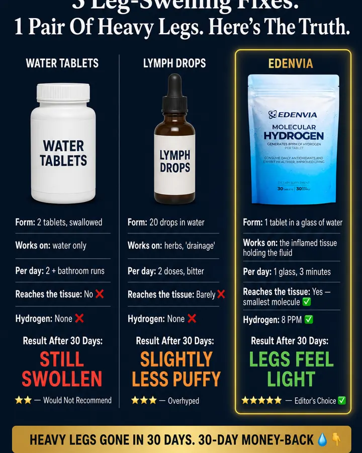
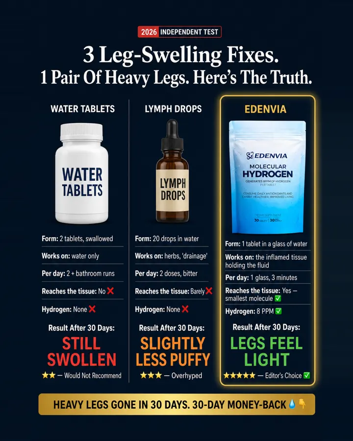
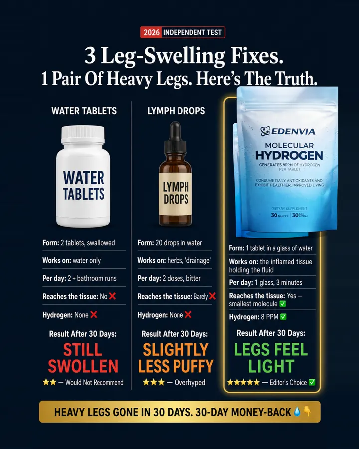
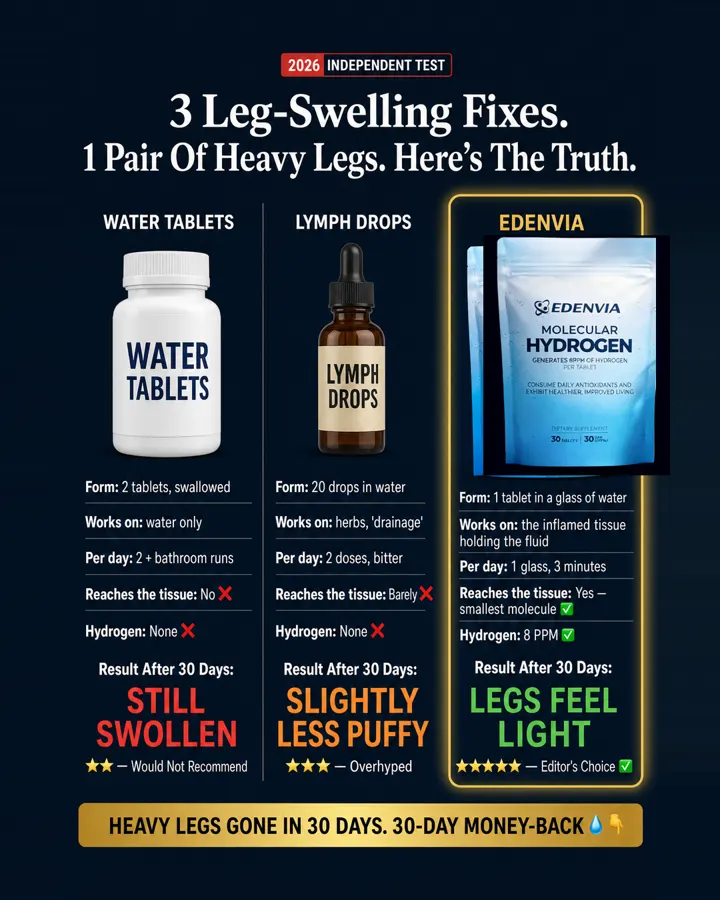
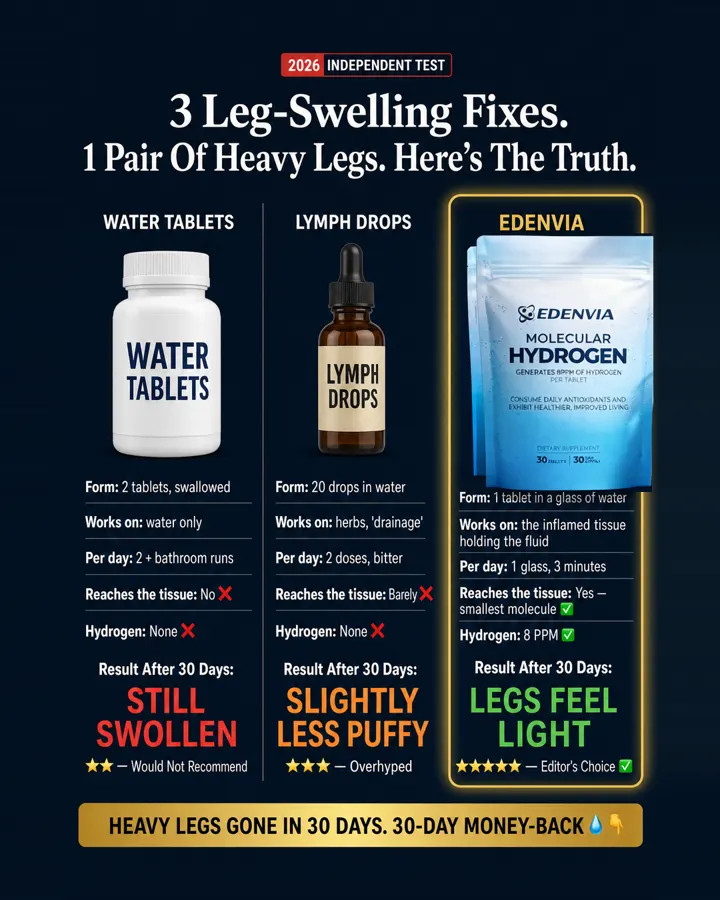
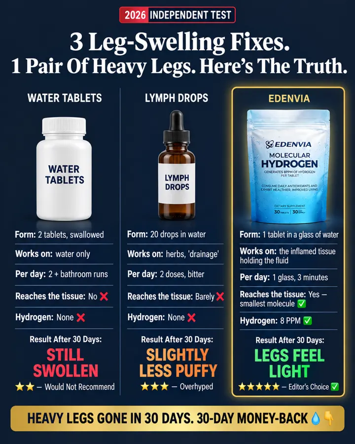
Why it worksQC round 1: the top crop cut the badge and the first headline line (D15). A fake 'independent test' table where three rival products are graded row by row and the third column glows gold as the only winner — the buyer reads the verdict before she reads the ad. Authority by layout: badge + grid + star ratings read as a lab report. Visual trick to copy literally: the glowing gold third column and the red → orange → green verdict words.
Template DNATheir three bottles (two rival organ supplements + Primal Edge Bison) → two generic things she already tried (a white 'WATER TABLETS' pill bottle, a brown 'LYMPH DROPS' dropper bottle) + the Edenvia pouch; their rows (Source/Origin/Organs/Filler/Testicle) → our rows (Form/Works on/Per day/Reaches the tissue/Hydrogen); 'beer belly' → 'heavy legs'; bison emoji → water drop.
Scene & placementno scene — a product grid; ours is the same grid with the three things she already tried against her swollen legs: water-tablet diuretics, herbal drainage drops, Edenvia
same spots; pouch in column 3 at the same height as the two rival bottles — like the template
same spots; pouch in column 3 at the same height as the two rival bottles — like the template
TextBadge: "2026 INDEPENDENT TEST"
Headline: "3 Leg-Swelling Fixes. 1 Pair Of Heavy Legs. Here's The Truth."
Col1_label: "WATER TABLETS"
Col1_rows: "Form: 2 tablets, swallowed / Works on: water only / Per day: 2 + bathroom runs / Reaches the tissue: No ❌ / Hydrogen: None ❌"
Col1_result: "Result After 30 Days: STILL SWOLLEN"
Col1_rating: "★★ — Would Not Recommend"
Col2_label: "LYMPH DROPS"
Col2_rows: "Form: 20 drops in water / Works on: herbs, 'drainage' / Per day: 2 doses, bitter / Reaches the tissue: Barely ❌ / Hydrogen: None ❌"
Col2_result: "Result After 30 Days: SLIGHTLY LESS PUFFY"
Col2_rating: "★★★ — Overhyped"
Col3_label: "EDENVIA"
Col3_rows: "Form: 1 tablet in a glass of water / Works on: the inflamed tissue holding the fluid / Per day: 1 glass, 3 minutes / Reaches the tissue: Yes — smallest molecule ✅ / Hydrogen: 8 PPM ✅"
Col3_result: "Result After 30 Days: LEGS FEEL LIGHT"
Col3_rating: "★★★★★ — Editor's Choice ✅"
Bottom_banner: "HEAVY LEGS GONE IN 30 DAYS. 30-DAY MONEY-BACK 💧👇"
Headline: "3 Leg-Swelling Fixes. 1 Pair Of Heavy Legs. Here's The Truth."
Col1_label: "WATER TABLETS"
Col1_rows: "Form: 2 tablets, swallowed / Works on: water only / Per day: 2 + bathroom runs / Reaches the tissue: No ❌ / Hydrogen: None ❌"
Col1_result: "Result After 30 Days: STILL SWOLLEN"
Col1_rating: "★★ — Would Not Recommend"
Col2_label: "LYMPH DROPS"
Col2_rows: "Form: 20 drops in water / Works on: herbs, 'drainage' / Per day: 2 doses, bitter / Reaches the tissue: Barely ❌ / Hydrogen: None ❌"
Col2_result: "Result After 30 Days: SLIGHTLY LESS PUFFY"
Col2_rating: "★★★ — Overhyped"
Col3_label: "EDENVIA"
Col3_rows: "Form: 1 tablet in a glass of water / Works on: the inflamed tissue holding the fluid / Per day: 1 glass, 3 minutes / Reaches the tissue: Yes — smallest molecule ✅ / Hydrogen: 8 PPM ✅"
Col3_result: "Result After 30 Days: LEGS FEEL LIGHT"
Col3_rating: "★★★★★ — Editor's Choice ✅"
Bottom_banner: "HEAVY LEGS GONE IN 30 DAYS. 30-DAY MONEY-BACK 💧👇"
Pixel inventory (KEEP / SWAP)
- KEEP badge: '2026 INDEPENDENT TEST' red/white badge top (template device; invented proof allowed (founder override 2026-10-11))
- SWAP headline: '3 Organ Supplements. 1 Beer Belly. Here's The Truth.' white serif, 2 lines → '3 Leg-Swelling Fixes. 1 Pair Of Heavy Legs. Here's The Truth.' (copy formula: [3 rivals]. [1 problem]. Here's The Truth — problem named in full (B2))
- SWAP column_1: Ancestral Supplements black bottle → a white plastic diuretic bottle labelled 'WATER TABLETS' (generic, no brand) (rival #1 = what she tried; no competitor name)
- SWAP column_2: Primal Viking amber bottle → a brown dropper bottle labelled 'LYMPH DROPS' (generic) (rival #2 = the competitor's herbal drainage drops, unnamed)
- SWAP column_3: Primal Edge Bison bottle in gold frame → the EDENVIA pouch of Image 1 in the gold frame (product_spot: the winner column)
- KEEP product_spot: three products at the top of each column, ~60 % column width (placement (A8))
- SWAP rows: Source / Origin / Organs / Filler / Testicle → Form / Works on / Per day / Reaches the tissue / Hydrogen (same 5-row grid, our facts; the last row is the ✓/✗ row like 'Testicle')
- SWAP result_row: 'Result After 90 Days:' + GUT UNCHANGED / MINOR ENERGY ONLY / GUT FLATTENING → 'Result After 30 Days:' + STILL SWOLLEN / SLIGHTLY LESS PUFFY / LEGS FEEL LIGHT (same colours red / orange / green; 30 days = our supply)
- KEEP rating_row: ★★ Would Not Recommend / ★★★ Overhyped / ★★★★★ Editor's Choice ✓ (already works for our buyer)
- SWAP bottom_banner: 'BEER BELLY GONE IN 21 DAYS. 60-DAY GUARANTEE 🦬👇' → 'HEAVY LEGS GONE IN 30 DAYS. 30-DAY MONEY-BACK 💧👇' (template carries a deadline so ours may (B6); our real guarantee; bison emoji → water drop)
- KEEP background: dark navy #0b1b2b, thin column dividers (render style)
- KEEP logo: none (template has no logo slot)
Backend prompt
IMAGE 1 = product reference: the EDENVIA Molecular Hydrogen tablet pouch. Reproduce it exactly as in Image 1: a stand-up resealable pouch with a zip seal, white at the top fading to sky blue at the bottom, covered in fine water droplets; at the top the Edenvia atom icon next to the bold italic wordmark Edenvia in dark navy; below it MOLECULAR in navy capitals, then HYDROGEN in very large bold navy capitals; then GENERATES 8PPM OF HYDROGEN PER TABLET; then two lines CONSUME DAILY ANTIOXIDANTS AND / EXHIBIT HEALTHIER, IMPROVED LIVING; near the bottom DIETARY SUPPLEMENT over a thin rule, then 30 TABLETS | 30 DAY SUPPLY. Real proportions, real 3D object with contact shadow and the scene's light. IMAGE 2 = the template ad to clone 1:1: same layout, composition, render style, palette, typography treatment, spacing and the SAME AMOUNT OF TEXT. PIXEL INVENTORY (KEEP / SWAP — follow exactly): - KEEP badge: '2026 INDEPENDENT TEST' red/white badge top (template device; invented proof allowed (founder override 2026-10-11)) - SWAP headline: '3 Organ Supplements. 1 Beer Belly. Here's The Truth.' white serif, 2 lines → '3 Leg-Swelling Fixes. 1 Pair Of Heavy Legs. Here's The Truth.' (copy formula: [3 rivals]. [1 problem]. Here's The Truth — problem named in full (B2)) - SWAP column_1: Ancestral Supplements black bottle → a white plastic diuretic bottle labelled 'WATER TABLETS' (generic, no brand) (rival #1 = what she tried; no competitor name) - SWAP column_2: Primal Viking amber bottle → a brown dropper bottle labelled 'LYMPH DROPS' (generic) (rival #2 = the competitor's herbal drainage drops, unnamed) - SWAP column_3: Primal Edge Bison bottle in gold frame → the EDENVIA pouch of Image 1 in the gold frame (product_spot: the winner column) - KEEP product_spot: three products at the top of each column, ~60 % column width (placement (A8)) - SWAP rows: Source / Origin / Organs / Filler / Testicle → Form / Works on / Per day / Reaches the tissue / Hydrogen (same 5-row grid, our facts; the last row is the ✓/✗ row like 'Testicle') - SWAP result_row: 'Result After 90 Days:' + GUT UNCHANGED / MINOR ENERGY ONLY / GUT FLATTENING → 'Result After 30 Days:' + STILL SWOLLEN / SLIGHTLY LESS PUFFY / LEGS FEEL LIGHT (same colours red / orange / green; 30 days = our supply) - KEEP rating_row: ★★ Would Not Recommend / ★★★ Overhyped / ★★★★★ Editor's Choice ✓ (already works for our buyer) - SWAP bottom_banner: 'BEER BELLY GONE IN 21 DAYS. 60-DAY GUARANTEE 🦬👇' → 'HEAVY LEGS GONE IN 30 DAYS. 30-DAY MONEY-BACK 💧👇' (template carries a deadline so ours may (B6); our real guarantee; bison emoji → water drop) - KEEP background: dark navy #0b1b2b, thin column dividers (render style) - KEEP logo: none (template has no logo slot) TEMPLATE DNA: Their three bottles (two rival organ supplements + Primal Edge Bison) → two generic things she already tried (a white 'WATER TABLETS' pill bottle, a brown 'LYMPH DROPS' dropper bottle) + the Edenvia pouch; their rows (Source/Origin/Organs/Filler/Testicle) → our rows (Form/Works on/Per day/Reaches the tissue/Hydrogen); 'beer belly' → 'heavy legs'; bison emoji → water drop. SCENE LOGIC: no scene — a product grid; ours is the same grid with the three things she already tried against her swollen legs: water-tablet diuretics, herbal drainage drops, Edenvia PRODUCT PLACEMENT (copy the template): same spots; pouch in column 3 at the same height as the two rival bottles — like the template CHANGES (visual): Dark navy (#0b1b2b) flat comparison layout, exactly the template's grid: a small red-and-white badge top centre, a two-line white serif headline, then three columns separated by thin dividers, each with a product photo at the top (about 60% of the column width, soft drop shadow), five bold-label rows, a 'Result After 30 Days:' line with one big verdict word, and a star-rating line; the third column framed in a glowing gold rounded border; a gold banner strip across the bottom. Column 1 product: a plain white plastic bottle whose label reads only WATER TABLETS (generic, no brand). Column 2 product: a plain brown glass dropper bottle whose label reads only LYMPH DROPS (generic). Column 3 product: the Edenvia Molecular Hydrogen stand-up pouch exactly as in Image 1 (white fading to sky blue, water droplets, zip seal) — a pouch of 30 effervescent tablets; never a bottle, jar, tub or blister, the same height as the two bottles, label to camera. Verdict words: column 1 red, column 2 orange, column 3 green, like the template. No person. Do NOT draw: no bison, no organs, no other dosage form in any column; no real brand on the rival bottles; no bottle, jar or tub for Edenvia; no glass. Product truth: one effervescent tablet dropped in a glass of clear water, never hot water. LETTERBOX (mandatory): the canvas is 2:3 but the finished ad is 4:5. Paint a solid band of the same dark navy across the TOP 9% and the BOTTOM 9% of the canvas and put NOTHING in those two bands — no text, no badge, no banner, no element. The whole ad, from the small red badge at the top down to the gold banner at the bottom, fits entirely inside the middle 82% of the canvas height, with visible empty navy above the badge and below the banner. TEXT (exactly, nothing else): - Badge: "2026 INDEPENDENT TEST" - Headline: "3 Leg-Swelling Fixes. 1 Pair Of Heavy Legs. Here's The Truth." - Col1_label: "WATER TABLETS" - Col1_rows: "Form: 2 tablets, swallowed / Works on: water only / Per day: 2 + bathroom runs / Reaches the tissue: No ❌ / Hydrogen: None ❌" - Col1_result: "Result After 30 Days: STILL SWOLLEN" - Col1_rating: "★★ — Would Not Recommend" - Col2_label: "LYMPH DROPS" - Col2_rows: "Form: 20 drops in water / Works on: herbs, 'drainage' / Per day: 2 doses, bitter / Reaches the tissue: Barely ❌ / Hydrogen: None ❌" - Col2_result: "Result After 30 Days: SLIGHTLY LESS PUFFY" - Col2_rating: "★★★ — Overhyped" - Col3_label: "EDENVIA" - Col3_rows: "Form: 1 tablet in a glass of water / Works on: the inflamed tissue holding the fluid / Per day: 1 glass, 3 minutes / Reaches the tissue: Yes — smallest molecule ✅ / Hydrogen: 8 PPM ✅" - Col3_result: "Result After 30 Days: LEGS FEEL LIGHT" - Col3_rating: "★★★★★ — Editor's Choice ✅" - Bottom_banner: "HEAVY LEGS GONE IN 30 DAYS. 30-DAY MONEY-BACK 💧👇" USE CASE + CONSTRAINTS: Meta ad in the TEMPLATE'S OWN FORMAT (D15: a square stays 1:1, 4:5 stays 4:5, a 9:16 Story stays 9:16), agency-grade; keep the template's spacing between text blocks. Render ONLY the listed text, spelled exactly, once — nothing added. Nothing from the template's product world may remain (product, brand, logo, flavor, packaging). Anatomically correct, adults over 25. CRITICAL: the EDENVIA pouch, when present, is an exact replica of Image 1. Leave every brand-logo spot outside the label EMPTY (plain background, no icon, no letters) — the official logo is pasted there by script afterwards.
S2 ⏳ To review

Why it worksThe same limb cut open twice: on the left the cross-section is packed with yellow fat around a shrunken muscle, on the right it is lean muscle — the buyer sees inside her own body; the authority of a textbook drawing. Visual trick to copy literally: two cross-sections side by side with a thin vertical divider, the 'bad' tissue lumpy and pale, the 'good' tissue clean red/pink — same pose, same cut line.
Template DNAupper arm bent at the elbow → a woman's lower leg from knee to foot, cut lengthwise (her problem lives in the calf and ankle); yellow fat globules → pale water-logged tissue with yellowish fluid pockets (fluid, not fat); 'Men on …' → 'Women on …'; 'Lose Fat, Not Definition' → 'Lose The Fluid, Not More Weight'; 'FLAT 20% OFF' → 'NOW $39.00'; 'mars' wordmark → Edenvia wordmark pasted by script.
Scene & placementno scene; a medical plate on a beige page — ours is the same plate, lower leg instead of upper arm, because her problem is inside the calf and ankle
none — the template has no product — like the template
none — the template has no product — like the template
TextHeader_left: "Women on other brands"
Header_right: "Women on Edenvia"
Tagline: "Lose The Fluid, Not More Weight."
Button: "NOW $39.00"
Footnote: "*Results may vary"
Header_right: "Women on Edenvia"
Tagline: "Lose The Fluid, Not More Weight."
Button: "NOW $39.00"
Footnote: "*Results may vary"
Pixel inventory (KEEP / SWAP)
- SWAP header_left: 'Men on Other brands' → 'Women on other brands' (template words kept, gender swapped (A19))
- SWAP header_right: 'Men on Mars Vitasteron' → 'Women on Edenvia' (brand slot)
- SWAP body_part: upper arm, bent at the elbow, cut lengthwise → lower leg from knee to foot, cut lengthwise, foot at the bottom (their body part = their problem; ours = the calf and ankle (C1))
- SWAP left_tissue: yellow fat globules crowding a small red muscle → pale water-logged tissue with yellowish fluid pockets swelling the calf outward, skin stretched, ankle thick (the invisible made visible (C2): fluid, not fat)
- KEEP right_tissue: full red muscle, thin fat layer (before/after stays before/after)
- KEEP divider: thin vertical black line (structure)
- SWAP tagline: 'Lose Fat, Not Definition.' → 'Lose The Fluid, Not More Weight.' (copy formula 'Lose X, Not Y'; her failed solution = losing weight)
- SWAP button: black rounded button 'FLAT 20% OFF' → black rounded button 'NOW $39.00' (our offer framing; $39.00 is in prices_allowed)
- SWAP logo: 'mars' wordmark small bottom centre → Edenvia wordmark (blue, light_bg file), same size, pasted by script (brand slot (D19))
- KEEP footnote: '*Results may vary' grey bottom right (template words kept)
- KEEP product_spot: none (C6: no product added)
- KEEP background: warm beige (render style)
Backend prompt
IMAGE 1 = product reference: the EDENVIA Molecular Hydrogen tablet pouch. Reproduce it exactly as in Image 1: a stand-up resealable pouch with a zip seal, white at the top fading to sky blue at the bottom, covered in fine water droplets; at the top the Edenvia atom icon next to the bold italic wordmark Edenvia in dark navy; below it MOLECULAR in navy capitals, then HYDROGEN in very large bold navy capitals; then GENERATES 8PPM OF HYDROGEN PER TABLET; then two lines CONSUME DAILY ANTIOXIDANTS AND / EXHIBIT HEALTHIER, IMPROVED LIVING; near the bottom DIETARY SUPPLEMENT over a thin rule, then 30 TABLETS | 30 DAY SUPPLY. Real proportions, real 3D object with contact shadow and the scene's light. IMAGE 2 = the template ad to clone 1:1: same layout, composition, render style, palette, typography treatment, spacing and the SAME AMOUNT OF TEXT. PIXEL INVENTORY (KEEP / SWAP — follow exactly): - SWAP header_left: 'Men on Other brands' → 'Women on other brands' (template words kept, gender swapped (A19)) - SWAP header_right: 'Men on Mars Vitasteron' → 'Women on Edenvia' (brand slot) - SWAP body_part: upper arm, bent at the elbow, cut lengthwise → lower leg from knee to foot, cut lengthwise, foot at the bottom (their body part = their problem; ours = the calf and ankle (C1)) - SWAP left_tissue: yellow fat globules crowding a small red muscle → pale water-logged tissue with yellowish fluid pockets swelling the calf outward, skin stretched, ankle thick (the invisible made visible (C2): fluid, not fat) - KEEP right_tissue: full red muscle, thin fat layer (before/after stays before/after) - KEEP divider: thin vertical black line (structure) - SWAP tagline: 'Lose Fat, Not Definition.' → 'Lose The Fluid, Not More Weight.' (copy formula 'Lose X, Not Y'; her failed solution = losing weight) - SWAP button: black rounded button 'FLAT 20% OFF' → black rounded button 'NOW $39.00' (our offer framing; $39.00 is in prices_allowed) - SWAP logo: 'mars' wordmark small bottom centre → Edenvia wordmark (blue, light_bg file), same size, pasted by script (brand slot (D19)) - KEEP footnote: '*Results may vary' grey bottom right (template words kept) - KEEP product_spot: none (C6: no product added) - KEEP background: warm beige (render style) TEMPLATE DNA: upper arm bent at the elbow → a woman's lower leg from knee to foot, cut lengthwise (her problem lives in the calf and ankle); yellow fat globules → pale water-logged tissue with yellowish fluid pockets (fluid, not fat); 'Men on …' → 'Women on …'; 'Lose Fat, Not Definition' → 'Lose The Fluid, Not More Weight'; 'FLAT 20% OFF' → 'NOW $39.00'; 'mars' wordmark → Edenvia wordmark pasted by script. SCENE LOGIC: no scene; a medical plate on a beige page — ours is the same plate, lower leg instead of upper arm, because her problem is inside the calf and ankle PRODUCT PLACEMENT (copy the template): none — the template has no product — like the template CHANGES (visual): Flat medical illustration on a warm beige (#f3efe9) page, NOT photoreal, exactly the template's layout: two bold black headers top left and top right, a thin vertical black divider down the middle, two cut-open limbs facing each other, an italic-accented tagline centred under them, a black rounded button, a tiny grey footnote bottom right. The limb is a woman's LOWER LEG from the knee to the foot, seen from the side, cut lengthwise: LEFT the leg swollen and thick at the calf and ankle, skin stretched, the tissue under the skin pale and water-logged with yellowish fluid pockets crowding a small muscle; RIGHT the same leg slim, skin close to a full red-pink muscle, a thin clean fat layer, the ankle defined. Same pose, same cut line, same soft pastel rendering with no outlines. The bottom-centre logo spot stays EMPTY plain beige. Do NOT draw: no arm, no elbow, no muscle-building reading, no veins drawn as a disease, no red inflamed skin; NO product, no pouch, no glass (the template has none). Product truth: one effervescent tablet dropped in a glass of clear water, never hot water. TEXT (exactly, nothing else): - Header_left: "Women on other brands" - Header_right: "Women on Edenvia" - Tagline: "Lose The Fluid, Not More Weight." - Button: "NOW $39.00" - Footnote: "*Results may vary" USE CASE + CONSTRAINTS: Meta ad in the TEMPLATE'S OWN FORMAT (D15: a square stays 1:1, 4:5 stays 4:5, a 9:16 Story stays 9:16), agency-grade; keep the template's spacing between text blocks. Render ONLY the listed text, spelled exactly, once — nothing added. Nothing from the template's product world may remain (product, brand, logo, flavor, packaging). Anatomically correct, adults over 25. CRITICAL: the EDENVIA pouch, when present, is an exact replica of Image 1. Leave every brand-logo spot outside the label EMPTY (plain background, no icon, no letters) — the official logo is pasted there by script afterwards.
S3 ⏳ To review

Why it worksThe brand's bottle faces the everyday thing the buyer already uses (coffee) with a VS badge between them, and the two columns of green ticks vs red crosses settle the fight before she reads a word; the familiar object becomes the loser. Visual trick to copy literally: cut-out product left on the brand-colour half, cut-out everyday object right on a grey half, big VS circle on the divider.
Template DNAgreen brand half → Edenvia blue gradient; Alevia AMLA bottle → the Edenvia pouch; coffee cup → the same white cup holding 'detox tea' with a DETOX teabag tag (cup ↔ cup); 'Alevia's AMLA' → 'Edenvia's HYDROGEN'; 'Coffee' → 'Detox Tea'; energy ticks/crosses → leg-swelling ticks/crosses.
Scene & placementno scene; a split page. Ours: the Edenvia pouch vs the cup of 'detox tea' she drinks for her swollen legs — the same cup shape, same place
Edenvia pouch from Image 1, same spot and size as the Alevia bottle (left half, under the headline, ~40 % of the half) — like the template
Edenvia pouch from Image 1, same spot and size as the Alevia bottle (left half, under the headline, ~40 % of the half) — like the template
TextHeadline_left: "Edenvia's HYDROGEN"
Vs_badge: "VS"
Headline_right: "Detox Tea"
Tick_1: "Reaches the fluid stuck in your legs"
Tick_2: "No bathroom runs every hour"
Tick_3: "Legs feel lighter by evening"
Tick_4: "No swelling bounce-back tomorrow"
Tick_5: "One tablet, one glass of water"
Cross_1: "Only flushes water for a few hours"
Cross_2: "Keeps you up for the bathroom"
Cross_3: "Legs heavy again by noon"
Cross_4: "Washes out minerals, not the puffiness"
Cross_5: "Only a temporary flush"
Vs_badge: "VS"
Headline_right: "Detox Tea"
Tick_1: "Reaches the fluid stuck in your legs"
Tick_2: "No bathroom runs every hour"
Tick_3: "Legs feel lighter by evening"
Tick_4: "No swelling bounce-back tomorrow"
Tick_5: "One tablet, one glass of water"
Cross_1: "Only flushes water for a few hours"
Cross_2: "Keeps you up for the bathroom"
Cross_3: "Legs heavy again by noon"
Cross_4: "Washes out minerals, not the puffiness"
Cross_5: "Only a temporary flush"
Pixel inventory (KEEP / SWAP)
- SWAP left_half_colour: green gradient → Edenvia accent blue gradient #1468DB → #14488F (brand colour slot)
- SWAP headline_left: 'Alevia's AMLA' white, 2 lines → 'Edenvia's HYDROGEN' (copy formula [Brand]'s [INGREDIENT])
- KEEP vs_badge: black circle 'VS' (structure)
- SWAP headline_right: 'Coffee' black → 'Detox Tea' (the rival habit she already knows (A31))
- SWAP product_spot: Alevia bottle left, ~40 % width, centred under the headline → the EDENVIA pouch, same spot and size (placement)
- SWAP rival_object: white coffee cup on saucer, steam → the same white cup on a saucer, pale yellow-green tea, a teabag tag hanging over the rim reading 'DETOX' (shape equivalent: cup ↔ cup)
- SWAP tick_list: 5 green ✅ benefit lines → 5 lines in our words (see slots) (same count, same hierarchy)
- SWAP cross_list: 5 red ❌ lines → 5 lines in our words (same count)
- KEEP logo: none beyond the product label (template has no logo slot)
Backend prompt
IMAGE 1 = product reference: the EDENVIA Molecular Hydrogen tablet pouch. Reproduce it exactly as in Image 1: a stand-up resealable pouch with a zip seal, white at the top fading to sky blue at the bottom, covered in fine water droplets; at the top the Edenvia atom icon next to the bold italic wordmark Edenvia in dark navy; below it MOLECULAR in navy capitals, then HYDROGEN in very large bold navy capitals; then GENERATES 8PPM OF HYDROGEN PER TABLET; then two lines CONSUME DAILY ANTIOXIDANTS AND / EXHIBIT HEALTHIER, IMPROVED LIVING; near the bottom DIETARY SUPPLEMENT over a thin rule, then 30 TABLETS | 30 DAY SUPPLY. Real proportions, real 3D object with contact shadow and the scene's light. IMAGE 2 = the template ad to clone 1:1: same layout, composition, render style, palette, typography treatment, spacing and the SAME AMOUNT OF TEXT. PIXEL INVENTORY (KEEP / SWAP — follow exactly): - SWAP left_half_colour: green gradient → Edenvia accent blue gradient #1468DB → #14488F (brand colour slot) - SWAP headline_left: 'Alevia's AMLA' white, 2 lines → 'Edenvia's HYDROGEN' (copy formula [Brand]'s [INGREDIENT]) - KEEP vs_badge: black circle 'VS' (structure) - SWAP headline_right: 'Coffee' black → 'Detox Tea' (the rival habit she already knows (A31)) - SWAP product_spot: Alevia bottle left, ~40 % width, centred under the headline → the EDENVIA pouch, same spot and size (placement) - SWAP rival_object: white coffee cup on saucer, steam → the same white cup on a saucer, pale yellow-green tea, a teabag tag hanging over the rim reading 'DETOX' (shape equivalent: cup ↔ cup) - SWAP tick_list: 5 green ✅ benefit lines → 5 lines in our words (see slots) (same count, same hierarchy) - SWAP cross_list: 5 red ❌ lines → 5 lines in our words (same count) - KEEP logo: none beyond the product label (template has no logo slot) TEMPLATE DNA: green brand half → Edenvia blue gradient; Alevia AMLA bottle → the Edenvia pouch; coffee cup → the same white cup holding 'detox tea' with a DETOX teabag tag (cup ↔ cup); 'Alevia's AMLA' → 'Edenvia's HYDROGEN'; 'Coffee' → 'Detox Tea'; energy ticks/crosses → leg-swelling ticks/crosses. SCENE LOGIC: no scene; a split page. Ours: the Edenvia pouch vs the cup of 'detox tea' she drinks for her swollen legs — the same cup shape, same place PRODUCT PLACEMENT (copy the template): Edenvia pouch from Image 1, same spot and size as the Alevia bottle (left half, under the headline, ~40 % of the half) — like the template CHANGES (visual): Flat split poster exactly like the template: LEFT half an Edenvia blue vertical gradient (#1468DB at the top to #14488F at the bottom), RIGHT half light grey; a black circle with VS sitting on the centre line at headline height. Left: a two-line white rounded bold headline, under it the Edenvia Molecular Hydrogen stand-up pouch exactly as in Image 1 (white fading to sky blue, water droplets, zip seal) — a pouch of 30 effervescent tablets; never a bottle, jar, tub or blister standing upright, about 40% of the half's width, soft shadow, label to camera. Right: the black headline, under it a plain white cup on a white saucer at the same size and spot as the template's coffee cup, filled with pale yellow-green tea, a small paper teabag tag hanging over the rim that reads DETOX. Below each: five lines, green ✅ ticks on the left, red ❌ crosses on the right, regular sans, same size and spacing as the template. No person. Do NOT draw: no coffee, no brand on the cup, no second product, no glass. Product truth: one effervescent tablet dropped in a glass of clear water, never hot water. TEXT (exactly, nothing else): - Headline_left: "Edenvia's HYDROGEN" - Vs_badge: "VS" - Headline_right: "Detox Tea" - Tick_1: "Reaches the fluid stuck in your legs" - Tick_2: "No bathroom runs every hour" - Tick_3: "Legs feel lighter by evening" - Tick_4: "No swelling bounce-back tomorrow" - Tick_5: "One tablet, one glass of water" - Cross_1: "Only flushes water for a few hours" - Cross_2: "Keeps you up for the bathroom" - Cross_3: "Legs heavy again by noon" - Cross_4: "Washes out minerals, not the puffiness" - Cross_5: "Only a temporary flush" USE CASE + CONSTRAINTS: Meta ad in the TEMPLATE'S OWN FORMAT (D15: a square stays 1:1, 4:5 stays 4:5, a 9:16 Story stays 9:16), agency-grade; keep the template's spacing between text blocks. Render ONLY the listed text, spelled exactly, once — nothing added. Nothing from the template's product world may remain (product, brand, logo, flavor, packaging). Anatomically correct, adults over 25. CRITICAL: the EDENVIA pouch, when present, is an exact replica of Image 1. Leave every brand-logo spot outside the label EMPTY (plain background, no icon, no letters) — the official logo is pasted there by script afterwards.
S4 ⏳ To review

Why it worksQC round 1: the side crop cut the first/last letters of the body lines (D15). A Pixar woman drawn twice — miserable in grey sweats on a black half, glowing in a white blouse on a purple half — with the rival's name spelled in leet so it reads as a secret ('OZ3MP!C'): the buyer feels let in on something; the sad character wears what she wears when she has given up. Visual trick to copy literally: the same character, two emotional states, leet-spelled rival name — ours 'ANOTHER D!ET'.
Template DNAPixar woman ~30 in sweatpants (hides nothing: their problem is appetite) → the same Pixar woman at 45–50 in capri leggings so the swollen calves and thick ankles show; pencil skirt → knee-length skirt with slim calves on show; 'OZ3MP!C' → 'ANOTHER D!ET'; 'BIOMA' → 'EDENVIA'; purple → Edenvia blue; needles/food-noise lines → heavy-legs lines.
Scene & placementno scene, studio gradient; ours keeps the split and the two characters, legs visible because the problem lives there
none — like the template
none — like the template
TextHeader_left_1: "What comes with"
Header_left_2: "ANOTHER D!ET"
Left_1: "Hungry all day"
Left_2: "Legs still heavy by 5 p.m."
Left_3: "Scale moves, swelling doesn't"
Left_4: "Puffiness back the week you stop"
Header_right_1: "What comes with"
Header_right_2: "EDENVIA"
Right_1: "1 tablet in a glass of water"
Right_2: "Puffiness: GONE"
Right_3: "Lighter legs, slimmer ankles"
Right_4: "“My boots zip again!”"
Header_left_2: "ANOTHER D!ET"
Left_1: "Hungry all day"
Left_2: "Legs still heavy by 5 p.m."
Left_3: "Scale moves, swelling doesn't"
Left_4: "Puffiness back the week you stop"
Header_right_1: "What comes with"
Header_right_2: "EDENVIA"
Right_1: "1 tablet in a glass of water"
Right_2: "Puffiness: GONE"
Right_3: "Lighter legs, slimmer ankles"
Right_4: "“My boots zip again!”"
Pixel inventory (KEEP / SWAP)
- SWAP person_left: Pixar woman ~30, long dark hair, grey T-shirt and grey sweatpants, sad → Pixar woman 45–50, same face as the right one, hair tied back, grey T-shirt and grey capri leggings so the swollen calves and thick ankles show, sad, standing heavy (avatar age + body part visible (A11, C1))
- SWAP person_right: Pixar woman, white blouse, black pencil skirt, smiling → the same woman, white blouse, knee-length skirt, slim calves and ankles, heeled sandals, smiling (before/after stays before/after; proud proof = legs in the open)
- SWAP header_left: 'What comes with' + 'OZ3MP!C' leet → 'What comes with' + 'ANOTHER D!ET' (the leet trick kept on our rival (A21))
- SWAP header_right: 'What comes with' + 'BIOMA' → 'What comes with' + 'EDENVIA' (brand slot)
- SWAP left_lines: 4 lines: needles, side effects, bill, weight comes back → 4 lines in our words (same count, same rhythm)
- SWAP right_lines: 4 lines: '2 … a day' / Food noise: GONE / Flatter belly, less bloat / 'Lost 24 lbs!' → 4 lines: 1 tablet in a glass of water / Puffiness: GONE / Lighter legs, slimmer ankles / 'My boots zip again!' (same formula incl. 'X: GONE' and the quoted proof line)
- SWAP background: black left, purple gradient right → black left, Edenvia blue gradient right (#1468DB → #0A1327) (brand colour slot)
- KEEP product_spot: none (C6: template has no product)
- KEEP logo: none (no logo slot)
Backend prompt
IMAGE 1 = product reference: the EDENVIA Molecular Hydrogen tablet pouch. Reproduce it exactly as in Image 1: a stand-up resealable pouch with a zip seal, white at the top fading to sky blue at the bottom, covered in fine water droplets; at the top the Edenvia atom icon next to the bold italic wordmark Edenvia in dark navy; below it MOLECULAR in navy capitals, then HYDROGEN in very large bold navy capitals; then GENERATES 8PPM OF HYDROGEN PER TABLET; then two lines CONSUME DAILY ANTIOXIDANTS AND / EXHIBIT HEALTHIER, IMPROVED LIVING; near the bottom DIETARY SUPPLEMENT over a thin rule, then 30 TABLETS | 30 DAY SUPPLY. Real proportions, real 3D object with contact shadow and the scene's light. IMAGE 2 = the template ad to clone 1:1: same layout, composition, render style, palette, typography treatment, spacing and the SAME AMOUNT OF TEXT. PIXEL INVENTORY (KEEP / SWAP — follow exactly): - SWAP person_left: Pixar woman ~30, long dark hair, grey T-shirt and grey sweatpants, sad → Pixar woman 45–50, same face as the right one, hair tied back, grey T-shirt and grey capri leggings so the swollen calves and thick ankles show, sad, standing heavy (avatar age + body part visible (A11, C1)) - SWAP person_right: Pixar woman, white blouse, black pencil skirt, smiling → the same woman, white blouse, knee-length skirt, slim calves and ankles, heeled sandals, smiling (before/after stays before/after; proud proof = legs in the open) - SWAP header_left: 'What comes with' + 'OZ3MP!C' leet → 'What comes with' + 'ANOTHER D!ET' (the leet trick kept on our rival (A21)) - SWAP header_right: 'What comes with' + 'BIOMA' → 'What comes with' + 'EDENVIA' (brand slot) - SWAP left_lines: 4 lines: needles, side effects, bill, weight comes back → 4 lines in our words (same count, same rhythm) - SWAP right_lines: 4 lines: '2 … a day' / Food noise: GONE / Flatter belly, less bloat / 'Lost 24 lbs!' → 4 lines: 1 tablet in a glass of water / Puffiness: GONE / Lighter legs, slimmer ankles / 'My boots zip again!' (same formula incl. 'X: GONE' and the quoted proof line) - SWAP background: black left, purple gradient right → black left, Edenvia blue gradient right (#1468DB → #0A1327) (brand colour slot) - KEEP product_spot: none (C6: template has no product) - KEEP logo: none (no logo slot) TEMPLATE DNA: Pixar woman ~30 in sweatpants (hides nothing: their problem is appetite) → the same Pixar woman at 45–50 in capri leggings so the swollen calves and thick ankles show; pencil skirt → knee-length skirt with slim calves on show; 'OZ3MP!C' → 'ANOTHER D!ET'; 'BIOMA' → 'EDENVIA'; purple → Edenvia blue; needles/food-noise lines → heavy-legs lines. SCENE LOGIC: no scene, studio gradient; ours keeps the split and the two characters, legs visible because the problem lives there PRODUCT PLACEMENT (copy the template): none — like the template CHANGES (visual): Pixar-style 3D render, big expressive eyes, soft studio light, NOT photoreal, exactly the template's split: LEFT half black studio fading to grey at the floor, RIGHT half an Edenvia blue gradient (#1468DB fading down to #0A1327). The same woman twice, standing full length, feet in frame: LEFT a woman of 45–50 with a soft midlife build, hair tied back, grey T-shirt and grey capri leggings so her visibly swollen, heavy calves and thick puffy ankles show, standing heavy, sad; RIGHT the same face and hair, a white blouse and a knee-length black skirt, slim calves and defined ankles, heeled sandals, smiling. Headers above each character: 'What comes with' in white rounded bold, under it the rival/brand name in a chunky cartoon display font with a dark outline; four short white lines beside the legs on each side with a soft shadow. NO product (the template has none). Do NOT draw: no needles, no drug imagery, no young slim character on the left (same 45-year-old face on both sides), no belly focus — the legs are the subject; do NOT copy the template's person. Product truth: one effervescent tablet dropped in a glass of clear water, never hot water. PILLARBOX (mandatory): the canvas is 2:3 but the finished ad is a 9:16 Story. Keep the LEFT 10% and the RIGHT 10% of the canvas as plain background of the half they belong to (black / blue, or cream) with NOTHING in them. Every text line is short, centred in its half, and ends well before the edge: all text and both characters fit entirely inside the central 80% of the canvas width. TEXT (exactly, nothing else): - Header_left_1: "What comes with" - Header_left_2: "ANOTHER D!ET" - Left_1: "Hungry all day" - Left_2: "Legs still heavy by 5 p.m." - Left_3: "Scale moves, swelling doesn't" - Left_4: "Puffiness back the week you stop" - Header_right_1: "What comes with" - Header_right_2: "EDENVIA" - Right_1: "1 tablet in a glass of water" - Right_2: "Puffiness: GONE" - Right_3: "Lighter legs, slimmer ankles" - Right_4: "“My boots zip again!”" USE CASE + CONSTRAINTS: Meta ad in the TEMPLATE'S OWN FORMAT (D15: a square stays 1:1, 4:5 stays 4:5, a 9:16 Story stays 9:16), agency-grade; keep the template's spacing between text blocks. Render ONLY the listed text, spelled exactly, once — nothing added. Nothing from the template's product world may remain (product, brand, logo, flavor, packaging). Anatomically correct, adults over 25. CRITICAL: the EDENVIA pouch, when present, is an exact replica of Image 1. Leave every brand-logo spot outside the label EMPTY (plain background, no icon, no letters) — the official logo is pasted there by script afterwards.
S5 ⏳ To review

Why it worksA blunt three-line question in black condensed caps over two cut-open tubes, one clogged, one clear, with the product standing between them as the switch. Visual trick to copy literally: two diagonal cut-open tubes mirrored left/right, left narrowed and clogged with a small arrow, right wide and clear with a big arrow; thin callout lines with small labels; the product centred at the bottom under a long thin line.
Template DNAartery with yellow plaque and red blood cells → the drainage vessel of a lower leg squeezed by swollen, water-logged tissue; 'blood flow' → 'drainage'; 'prediabetic men / can't stay hard' → 'dieted for years / legs still swollen'; 'ER3CT!ONS' → 'light, slim legs'; Primal Storm tub → the Edenvia pouch.
Scene & placementno scene; a diagram on cream paper. Ours: the same diagram, the vessel that drains the leg instead of an artery, because her problem is fluid that stopped moving
Edenvia pouch from Image 1, same spot and size as the tub: centred at the bottom between the two diagrams, the thin line above it — like the template
Edenvia pouch from Image 1, same spot and size as the tub: centred at the bottom between the two diagrams, the thin line above it — like the template
TextHeadline: "DIETED FOR YEARS: LEGS STILL SWOLLEN? LOOK AT YOUR DRAINAGE."
Panel_left: "BLOCKED DRAINAGE"
Panel_right: "CLEAR DRAINAGE"
Callout_left_1: "Inflamed, swollen tissue"
Callout_left_2: "Fluid sitting still"
Callout_right_1: "Calm tissue"
Callout_right_2: "Fluid draining"
Footer: "SUPPORT THE DRAINAGE BEHIND LIGHT, SLIM LEGS."
Panel_left: "BLOCKED DRAINAGE"
Panel_right: "CLEAR DRAINAGE"
Callout_left_1: "Inflamed, swollen tissue"
Callout_left_2: "Fluid sitting still"
Callout_right_1: "Calm tissue"
Callout_right_2: "Fluid draining"
Footer: "SUPPORT THE DRAINAGE BEHIND LIGHT, SLIM LEGS."
Pixel inventory (KEEP / SWAP)
- SWAP headline: 'PREDIABETIC MEN: CAN'T STAY HARD? LOOK AT YOUR BLOOD FLOW.' 3 lines → 'DIETED FOR YEARS: LEGS STILL SWOLLEN? LOOK AT YOUR DRAINAGE.' 3 lines (copy formula [who]: [problem?] LOOK AT YOUR [mechanism]; problem named in full (B2))
- SWAP panel_label_left: 'WEAK BLOOD-FLOW' → 'BLOCKED DRAINAGE' (mechanism noun swap)
- SWAP panel_label_right: 'STRONGER BLOOD-FLOW' → 'CLEAR DRAINAGE' (mechanism noun swap)
- SWAP left_diagram: narrowed artery, yellow plaque, red cells squeezed, small arrow → drainage vessel squeezed by swollen pale tissue, stagnant yellowish fluid, small arrow (shape equivalent: tube ↔ tube)
- SWAP right_diagram: wide artery, free red cells, big arrow → open vessel, calm pink tissue, clear fluid moving, big arrow (before/after stays before/after)
- SWAP callouts_left: 'Narrowed Arteries' / 'Reduced Blood-flow' → 'Inflamed, swollen tissue' / 'Fluid sitting still' (mechanism in plain words (B4))
- SWAP callouts_right: 'Wider Arteries' / 'Improved Blood-flow' → 'Calm tissue' / 'Fluid draining' (plain words)
- SWAP product_spot: Primal Storm tub centred bottom, ~25 % width, between the two diagrams, thin line above it → the EDENVIA pouch, same spot, real proportions (placement (A8))
- SWAP footer: 'SUPPORT THE BLOOD FLOW BEHIND YOUR ER3CT!ONS.' 2 lines → 'SUPPORT THE DRAINAGE BEHIND LIGHT, SLIM LEGS.' 2 lines (copy formula SUPPORT THE [mechanism] BEHIND [result])
- KEEP background: cream paper (render style)
Backend prompt
IMAGE 1 = product reference: the EDENVIA Molecular Hydrogen tablet pouch. Reproduce it exactly as in Image 1: a stand-up resealable pouch with a zip seal, white at the top fading to sky blue at the bottom, covered in fine water droplets; at the top the Edenvia atom icon next to the bold italic wordmark Edenvia in dark navy; below it MOLECULAR in navy capitals, then HYDROGEN in very large bold navy capitals; then GENERATES 8PPM OF HYDROGEN PER TABLET; then two lines CONSUME DAILY ANTIOXIDANTS AND / EXHIBIT HEALTHIER, IMPROVED LIVING; near the bottom DIETARY SUPPLEMENT over a thin rule, then 30 TABLETS | 30 DAY SUPPLY. Real proportions, real 3D object with contact shadow and the scene's light. IMAGE 2 = the template ad to clone 1:1: same layout, composition, render style, palette, typography treatment, spacing and the SAME AMOUNT OF TEXT. PIXEL INVENTORY (KEEP / SWAP — follow exactly): - SWAP headline: 'PREDIABETIC MEN: CAN'T STAY HARD? LOOK AT YOUR BLOOD FLOW.' 3 lines → 'DIETED FOR YEARS: LEGS STILL SWOLLEN? LOOK AT YOUR DRAINAGE.' 3 lines (copy formula [who]: [problem?] LOOK AT YOUR [mechanism]; problem named in full (B2)) - SWAP panel_label_left: 'WEAK BLOOD-FLOW' → 'BLOCKED DRAINAGE' (mechanism noun swap) - SWAP panel_label_right: 'STRONGER BLOOD-FLOW' → 'CLEAR DRAINAGE' (mechanism noun swap) - SWAP left_diagram: narrowed artery, yellow plaque, red cells squeezed, small arrow → drainage vessel squeezed by swollen pale tissue, stagnant yellowish fluid, small arrow (shape equivalent: tube ↔ tube) - SWAP right_diagram: wide artery, free red cells, big arrow → open vessel, calm pink tissue, clear fluid moving, big arrow (before/after stays before/after) - SWAP callouts_left: 'Narrowed Arteries' / 'Reduced Blood-flow' → 'Inflamed, swollen tissue' / 'Fluid sitting still' (mechanism in plain words (B4)) - SWAP callouts_right: 'Wider Arteries' / 'Improved Blood-flow' → 'Calm tissue' / 'Fluid draining' (plain words) - SWAP product_spot: Primal Storm tub centred bottom, ~25 % width, between the two diagrams, thin line above it → the EDENVIA pouch, same spot, real proportions (placement (A8)) - SWAP footer: 'SUPPORT THE BLOOD FLOW BEHIND YOUR ER3CT!ONS.' 2 lines → 'SUPPORT THE DRAINAGE BEHIND LIGHT, SLIM LEGS.' 2 lines (copy formula SUPPORT THE [mechanism] BEHIND [result]) - KEEP background: cream paper (render style) TEMPLATE DNA: artery with yellow plaque and red blood cells → the drainage vessel of a lower leg squeezed by swollen, water-logged tissue; 'blood flow' → 'drainage'; 'prediabetic men / can't stay hard' → 'dieted for years / legs still swollen'; 'ER3CT!ONS' → 'light, slim legs'; Primal Storm tub → the Edenvia pouch. SCENE LOGIC: no scene; a diagram on cream paper. Ours: the same diagram, the vessel that drains the leg instead of an artery, because her problem is fluid that stopped moving PRODUCT PLACEMENT (copy the template): Edenvia pouch from Image 1, same spot and size as the tub: centred at the bottom between the two diagrams, the thin line above it — like the template CHANGES (visual): Coloured-pencil medical sketch on cream (#f5e9d8) paper, hand-drawn hatching, NOT a photo, exactly the template: a three-line heavy condensed black headline at the top, two bold caps panel labels, two mirrored diagonal cut-open tubes left and right with thin black callout lines and small labels, the Edenvia Molecular Hydrogen stand-up pouch exactly as in Image 1 (white fading to sky blue, water droplets, zip seal) — a pouch of 30 effervescent tablets; never a bottle, jar, tub or blister standing centred at the bottom between the two diagrams with a long thin vertical line down to it, and a two-line heavy condensed footer. The tubes are the drainage vessels inside a lower leg: LEFT the vessel squeezed narrow by swollen, pale, water-logged tissue around it, stagnant yellowish fluid inside, a small arrow; RIGHT the vessel wide open in calm pink tissue, clear fluid moving, a big arrow. Do NOT draw: no artery, no red blood cells, no plaque, no heart; no jar or tub — the product is the pouch of Image 1 at real proportions, label untouched; no glass; no person. Product truth: one effervescent tablet dropped in a glass of clear water, never hot water. TEXT (exactly, nothing else): - Headline: "DIETED FOR YEARS: LEGS STILL SWOLLEN? LOOK AT YOUR DRAINAGE." - Panel_left: "BLOCKED DRAINAGE" - Panel_right: "CLEAR DRAINAGE" - Callout_left_1: "Inflamed, swollen tissue" - Callout_left_2: "Fluid sitting still" - Callout_right_1: "Calm tissue" - Callout_right_2: "Fluid draining" - Footer: "SUPPORT THE DRAINAGE BEHIND LIGHT, SLIM LEGS." USE CASE + CONSTRAINTS: Meta ad in the TEMPLATE'S OWN FORMAT (D15: a square stays 1:1, 4:5 stays 4:5, a 9:16 Story stays 9:16), agency-grade; keep the template's spacing between text blocks. Render ONLY the listed text, spelled exactly, once — nothing added. Nothing from the template's product world may remain (product, brand, logo, flavor, packaging). Anatomically correct, adults over 25. CRITICAL: the EDENVIA pouch, when present, is an exact replica of Image 1. Leave every brand-logo spot outside the label EMPTY (plain background, no icon, no letters) — the official logo is pasted there by script afterwards.
S6 ⏳ To review

Why it worksTwo arms locked in an arm-wrestle, one thick and veined, one thin and pale, under 'Beef vs. Spaghetti' — the metaphor and the photo say the same thing in half a second; everyone can see which one you are. Visual trick to copy literally: two bodies touching at the centre, the winner on the left, dark vignette, product floating top-left, brand-colour footer band.
Template DNAarm-wrestling arms (their problem = muscle) → two men's waistlines side by side (our problem = the belly over the belt); 'Beef vs. Spaghetti' → 'Belt Buckle vs. Keg'; 'MYO-GROW' red → 'EDENVIA' blue; Myo-Grow bottle → the Edenvia pouch pasted by script; red band → navy band; 'refuse to shrink with age' → 'refuse to blame the beer'.
Scene & placementa contest where the body difference is the whole point. Ours: two men side by side at a backyard BBQ, shirts tucked, belt line in frame — the belly difference is the contest
Edenvia pouch from Image 1, same spot and size as the bottle: floating top-left over the photo, ~22 % width — like the template
Edenvia pouch from Image 1, same spot and size as the bottle: floating top-left over the photo, ~22 % width — like the template
TextLine_1: "Belt Buckle vs. Keg"
Line_2: "Guess who's on EDENVIA"
Footer: "EDENVIA was made for men who refuse to blame the beer."
Line_2: "Guess who's on EDENVIA"
Footer: "EDENVIA was made for men who refuse to blame the beer."
Pixel inventory (KEEP / SWAP)
- SWAP line_1: 'Beef vs. Spaghetti' white regular → 'Belt Buckle vs. Keg' (metaphor pair for our body part (E6))
- SWAP line_2: 'Guess who's on MYO-GROW' bold, brand in red → 'Guess who's on EDENVIA' bold, brand in Edenvia accent blue (template words kept + brand slot)
- SWAP scene: two arms arm-wrestling, dark studio → two men 45–60 at a backyard BBQ in the evening, side by side from chest to thigh, shirts tucked into jeans, each holding a beer; left man flat waist and visible belt buckle, right man a round belly hanging over the belt (scene where OUR problem is directly visible (A3); concede the beer (B11))
- KEEP product_spot: product top-left, ~22 % width, floating over the photo (placement) — the real pouch cutout pasted by script
- SWAP footer_band: red band, 2 lines white bold → Edenvia navy #14488F band, 2 lines white bold (brand colour)
- SWAP footer_text: 'MYO-GROW was made for men who refuse to shrink with age.' → 'EDENVIA was made for men who refuse to blame the beer.' (copy formula + B11 (concede the pleasure))
- KEEP logo: none (no logo slot)
Backend prompt
Rendered by script (exact typography).
S7 ⏳ To review

Why it worksA pile of fifteen skincare products on the left against a single jar on the right under 'OLD ME / NEW ME' — the clutter is the confession; she recognises her own bathroom shelf. Visual trick to copy literally: many vs one, same lighting, same table; the one product gets all the space on the right.
Template DNAskincare bottles, fan, jade roller (her old face routine) → compression socks, detox tea, dry brush, water tablets, tape measure, scale (her old leg routine); amber balm jar → the Edenvia pouch pasted by script; plum → deep navy; 'FOR PERIMENOPAUSE' → 'FOR HEAVY, SWOLLEN LEGS'; beige → ice blue.
Scene & placementa product still life on a warm tabletop; ours is the same still life with HER graveyard: compression socks, a box of 'detox tea', a dry brush, a white diuretic bottle, a measuring tape, a bathroom scale corner
Edenvia pouch from Image 1 standing upright, right half, same spot and visual weight as the jar — like the template
Edenvia pouch from Image 1 standing upright, right half, same spot and visual weight as the jar — like the template
TextHeader_left: "OLD ME"
Header_right: "NEW ME"
Caption_left: "Compression, teas, dry brushing — and legs still heavy by 5 p.m."
Caption_right: "One tablet, one glass of water, 8 PPM of hydrogen."
Button: "FOR HEAVY, SWOLLEN LEGS"
Header_right: "NEW ME"
Caption_left: "Compression, teas, dry brushing — and legs still heavy by 5 p.m."
Caption_right: "One tablet, one glass of water, 8 PPM of hydrogen."
Button: "FOR HEAVY, SWOLLEN LEGS"
Pixel inventory (KEEP / SWAP)
- SWAP header_left: 'OLD ME' plum serif caps → 'OLD ME' deep navy (template words kept; brand colour)
- SWAP header_right: 'NEW ME' → 'NEW ME' deep navy (template words kept)
- SWAP left_pile: ~15 white skincare bottles, tubes, jars, a small fan, a jade roller → a pile of her leg-swelling fixes: two rolled beige compression socks, a box of herbal tea, a wooden dry brush, a plain white pill bottle, a tape measure, a corner of a bathroom scale (props of OUR problem (A12))
- SWAP product_spot: one amber jar with white lid, right half, ~45 % width, centred → the EDENVIA pouch, same spot, pasted by script (placement; product alone = the point)
- SWAP caption_left: 'Dryness, thinning, uneven tone and unexpected breakouts.' → 'Compression, teas, dry brushing — and legs still heavy by 5 p.m.' (list formula, problem named (B2))
- SWAP caption_right: 'Cold-pressed, undiluted, arctic formula.' → 'One tablet, one glass of water, 8 PPM of hydrogen.' (three-beat product formula; label claim)
- SWAP button: 'FOR PERIMENOPAUSE' plum rounded → 'FOR HEAVY, SWOLLEN LEGS' deep navy rounded (name the problem, not the condition (B2))
- SWAP background: warm beige tabletop → Edenvia ice blue tabletop, same soft daylight (brand palette; render style kept)
- KEEP logo: none (no logo slot)
Backend prompt
Rendered by script (exact typography).
S8 ⏳ To review


Why it worksQC round 1: the top crop cut the first headline line; the button touched the bottom edge (D15). Two desks stacked: the top one is chaos (energy cans, notifications, crumpled paper), the bottom one is calm with the bottle and a glass of water — the ad shows the before and after of a habit, not a body; the relief of the clean desk. Visual trick to copy literally: same camera angle for both halves, the bottom half warmer and tidier.
Template DNAmessy desk with energy cans and a phone (their problem = evenings) → messy bathroom counter at night with her leg-swelling props; calm desk with gummies and water → calm kitchen counter in the morning with the Edenvia pouch and the fizzing glass; 'wind-down routine' → 'leg-swelling routine'; 'calm / plant-based / clinically proven' → 'lighter legs / 8 PPM hydrogen / third-party lab tested'; yellow button → Edenvia blue.
Scene & placementdesk because the product fixes evenings at the desk. Ours: top = her evening leg routine on the bathroom counter (compression socks peeled off, 'detox tea' box, dry brush, a white bottle, legs-up pillow); bottom = the kitchen counter in the morning, the pouch and a clear glass with the tablet fizzing
Edenvia pouch, same spot and size as the Goli bottle (lower-left of the bottom scene, ~20 % width); the glass to its right with the tablet fizzing — like the template
Edenvia pouch, same spot and size as the Goli bottle (lower-left of the bottom scene, ~20 % width); the glass to its right with the tablet fizzing — like the template
TextHeadline: "Your current leg-swelling routine may be letting you down."
Subline: "Legs feel lighter without the bathroom runs. 8 PPM hydrogen. Third-party lab tested."
Button: "Upgrade your routine →"
Subline: "Legs feel lighter without the bathroom runs. 8 PPM hydrogen. Third-party lab tested."
Button: "Upgrade your routine →"
Pixel inventory (KEEP / SWAP)
- SWAP headline: 'Your current wind-down routine may be letting you down.' 3 lines → 'Your current leg-swelling routine may be letting you down.' 3 lines (copy formula, one noun swapped, same length)
- SWAP subline: 'Support calm without the crash. Plant-based. Clinically proven.' → 'Legs feel lighter without the bathroom runs. 8 PPM hydrogen. Third-party lab tested.' (three-beat formula; proof from the kit)
- SWAP top_scene: messy desk: energy cans, iced coffee, phone with notifications, crumpled notes → messy bathroom counter at night: peeled-off compression socks, a box of herbal tea, a dry brush, a plain white pill bottle, a wedge pillow, a phone lying face up (props of OUR problem)
- SWAP bottom_scene: calm desk: lamp, book, bottle, glass of water, plant → calm kitchen counter in the morning: the Edenvia pouch, a clear glass of water with the white tablet fizzing at the bottom and fine bubbles rising, a plant, a window (scene of the fix; glass kept)
- SWAP product_spot: Goli bottle lower-left of the bottom scene, ~20 % width, glass of water to its right → the EDENVIA pouch, same spot, the glass with the tablet fizzing to its right (placement + the ingredient visual (C2))
- SWAP button: yellow 'Upgrade your routine →' → Edenvia accent blue button, same words 'Upgrade your routine →' (template words kept; brand colour)
- KEEP logo: none (no logo slot)
Backend prompt
IMAGE 1 = product reference: the EDENVIA Molecular Hydrogen tablet pouch. Reproduce it exactly as in Image 1: a stand-up resealable pouch with a zip seal, white at the top fading to sky blue at the bottom, covered in fine water droplets; at the top the Edenvia atom icon next to the bold italic wordmark Edenvia in dark navy; below it MOLECULAR in navy capitals, then HYDROGEN in very large bold navy capitals; then GENERATES 8PPM OF HYDROGEN PER TABLET; then two lines CONSUME DAILY ANTIOXIDANTS AND / EXHIBIT HEALTHIER, IMPROVED LIVING; near the bottom DIETARY SUPPLEMENT over a thin rule, then 30 TABLETS | 30 DAY SUPPLY. Real proportions, real 3D object with contact shadow and the scene's light. IMAGE 2 = the template ad to clone 1:1: same layout, composition, render style, palette, typography treatment, spacing and the SAME AMOUNT OF TEXT. PIXEL INVENTORY (KEEP / SWAP — follow exactly): - SWAP headline: 'Your current wind-down routine may be letting you down.' 3 lines → 'Your current leg-swelling routine may be letting you down.' 3 lines (copy formula, one noun swapped, same length) - SWAP subline: 'Support calm without the crash. Plant-based. Clinically proven.' → 'Legs feel lighter without the bathroom runs. 8 PPM hydrogen. Third-party lab tested.' (three-beat formula; proof from the kit) - SWAP top_scene: messy desk: energy cans, iced coffee, phone with notifications, crumpled notes → messy bathroom counter at night: peeled-off compression socks, a box of herbal tea, a dry brush, a plain white pill bottle, a wedge pillow, a phone lying face up (props of OUR problem) - SWAP bottom_scene: calm desk: lamp, book, bottle, glass of water, plant → calm kitchen counter in the morning: the Edenvia pouch, a clear glass of water with the white tablet fizzing at the bottom and fine bubbles rising, a plant, a window (scene of the fix; glass kept) - SWAP product_spot: Goli bottle lower-left of the bottom scene, ~20 % width, glass of water to its right → the EDENVIA pouch, same spot, the glass with the tablet fizzing to its right (placement + the ingredient visual (C2)) - SWAP button: yellow 'Upgrade your routine →' → Edenvia accent blue button, same words 'Upgrade your routine →' (template words kept; brand colour) - KEEP logo: none (no logo slot) TEMPLATE DNA: messy desk with energy cans and a phone (their problem = evenings) → messy bathroom counter at night with her leg-swelling props; calm desk with gummies and water → calm kitchen counter in the morning with the Edenvia pouch and the fizzing glass; 'wind-down routine' → 'leg-swelling routine'; 'calm / plant-based / clinically proven' → 'lighter legs / 8 PPM hydrogen / third-party lab tested'; yellow button → Edenvia blue. SCENE LOGIC: desk because the product fixes evenings at the desk. Ours: top = her evening leg routine on the bathroom counter (compression socks peeled off, 'detox tea' box, dry brush, a white bottle, legs-up pillow); bottom = the kitchen counter in the morning, the pouch and a clear glass with the tablet fizzing PRODUCT PLACEMENT (copy the template): Edenvia pouch, same spot and size as the Goli bottle (lower-left of the bottom scene, ~20 % width); the glass to its right with the tablet fizzing — like the template CHANGES (visual): Photoreal, exactly the template's stacked layout: the TOP half a messy bathroom counter at night under warm lamp light — peeled-off beige compression socks, a box of herbal tea, a wooden dry brush, a plain white bottle, a wedge leg pillow, a phone lying face up with a dark screen — with the three-line white bold headline and the two-line white regular subline over it; the BOTTOM half a calm kitchen counter in soft morning light, shallow depth of field: the Edenvia Molecular Hydrogen stand-up pouch exactly as in Image 1 (white fading to sky blue, water droplets, zip seal) — a pouch of 30 effervescent tablets; never a bottle, jar, tub or blister standing lower-left (about 20% of the width, real proportions, label to camera), to its right a clear glass of clear water at room temperature with one white effervescent tablet fizzing at the bottom and fine hydrogen bubbles rising; the water stays clear and clean — never cloudy, never foamy, never coloured, never hot water, never tea or coffee, never a hydrogen-water bottle or generator, a small plant and a window behind; an Edenvia blue (#1468DB) rounded button with white text across the bottom. No person. Do NOT draw: no desk, no energy cans, no laptop, no gummies, no bottle or jar for Edenvia; no text on the phone. Product truth: one effervescent tablet dropped in a glass of clear water, never hot water. LETTERBOX (mandatory): the canvas is 2:3 but the finished ad is 3:4. Paint a solid dark band across the TOP 7% and the BOTTOM 7% of the canvas and put NOTHING in those bands. The whole ad, from the first word of the headline at the top to the blue button at the bottom, fits entirely inside the middle 86% of the canvas height, with visible empty background above the headline and below the button. TEXT (exactly, nothing else): - Headline: "Your current leg-swelling routine may be letting you down." - Subline: "Legs feel lighter without the bathroom runs. 8 PPM hydrogen. Third-party lab tested." - Button: "Upgrade your routine →" USE CASE + CONSTRAINTS: Meta ad in the TEMPLATE'S OWN FORMAT (D15: a square stays 1:1, 4:5 stays 4:5, a 9:16 Story stays 9:16), agency-grade; keep the template's spacing between text blocks. Render ONLY the listed text, spelled exactly, once — nothing added. Nothing from the template's product world may remain (product, brand, logo, flavor, packaging). Anatomically correct, adults over 25. CRITICAL: the EDENVIA pouch, when present, is an exact replica of Image 1. Leave every brand-logo spot outside the label EMPTY (plain background, no icon, no letters) — the official logo is pasted there by script afterwards.
S9 ⏳ To review

Why it worksThe crying wojak and the bearded chad — the internet's own 'loser vs winner' — with three brutally specific lines under each; the reader knows which one he is, and the wife is the witness. Visual trick to copy literally: two meme faces facing each other across a white/red split, product tucked bottom right, 'ingredient stack' line bottom left; red half → Edenvia blue.
Template DNAbedroom shame/triumph lines → belly shame/triumph lines with the same wife witness and the same profanity; 'PYGEUM + ZINC + LECITHIN' → 'HYDROGEN + MAGNESIUM + MINERALS'; 'The Stack' → 'The Glass'; red half → Edenvia blue; black tub → the Edenvia pouch pasted by script; red CTA → blue CTA.
Scene & placementno scene; a meme card. Ours: same card, same two faces, belly lines instead of bedroom lines
Edenvia pouch from Image 1, same spot and size as the tub: bottom right, ~20 % width, overlapping the split — like the template
Edenvia pouch from Image 1, same spot and size as the tub: bottom right, ~20 % width, overlapping the split — like the template
TextLeft_1: "SUCKS HIS GUT IN FOR EVERY PHOTO"
Left_2: "WIFE SAYS 'IT'S THE BEER' WITHOUT LOOKING UP"
Left_3: "KEEPS HIS SHIRT ON AT THE POOL SO NOBODY CAN SEE"
Right_1: "TUCKS HIS SHIRT IN. ON PURPOSE."
Right_2: "WIFE: \"HOLY SHIT, WHERE DID YOUR GUT GO?\""
Right_3: "STANDS FOR THE PHOTO BECAUSE HE KNOWS THE BELT WILL IMPRESS"
Ingredient_line: "HYDROGEN + MAGNESIUM + MINERALS"
Tagline: "The Glass That Changes Everything."
Cta: "SHOP NOW →"
Left_2: "WIFE SAYS 'IT'S THE BEER' WITHOUT LOOKING UP"
Left_3: "KEEPS HIS SHIRT ON AT THE POOL SO NOBODY CAN SEE"
Right_1: "TUCKS HIS SHIRT IN. ON PURPOSE."
Right_2: "WIFE: \"HOLY SHIT, WHERE DID YOUR GUT GO?\""
Right_3: "STANDS FOR THE PHOTO BECAUSE HE KNOWS THE BELT WILL IMPRESS"
Ingredient_line: "HYDROGEN + MAGNESIUM + MINERALS"
Tagline: "The Glass That Changes Everything."
Cta: "SHOP NOW →"
Pixel inventory (KEEP / SWAP)
- KEEP left_face: crying wojak, line art (meme stays meme)
- KEEP right_face: bearded chad profile (meme stays meme)
- SWAP left_lines: 3 sexual shame lines → 3 belly shame lines (see slots) (same count, same register, our problem)
- SWAP right_lines: 3 sexual triumph lines incl. 'WIFE: HOLY SHIT…' → 3 belly triumph lines incl. 'WIFE: HOLY SHIT, WHERE DID YOUR GUT GO?' (copy formula + profanity level kept (A15))
- SWAP ingredient_line: 'PYGEUM + ZINC + LECITHIN' big caps → 'HYDROGEN + MAGNESIUM + MINERALS' (our literal contents in the same display (C2))
- SWAP tagline: 'The Stack That Changes Everything.' → 'The Glass That Changes Everything.' (copy formula; one noun = our ritual)
- SWAP cta: red 'SHOP NOW →' → Edenvia blue 'SHOP NOW →' (template words kept)
- SWAP product_spot: black tub bottom right, ~20 % width, overlapping the split → the EDENVIA pouch, same spot, pasted by script (placement)
- SWAP right_half_colour: red → Edenvia accent blue (brand colour)
- KEEP logo: none (no logo slot)
Backend prompt
Rendered by script (exact typography).
S10 ⏳ To review

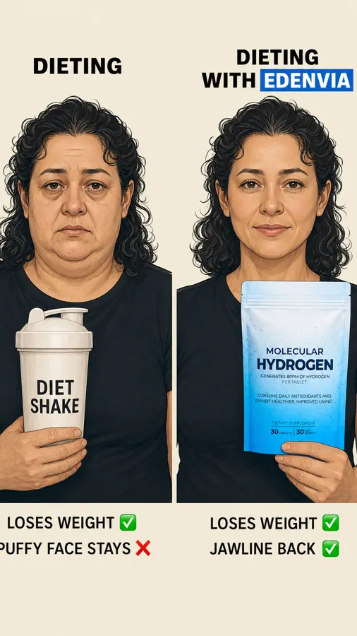
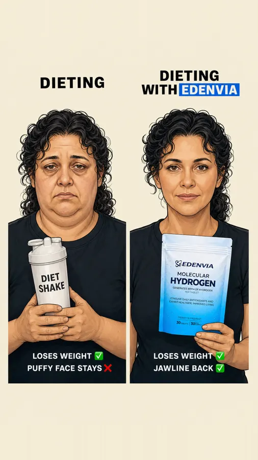
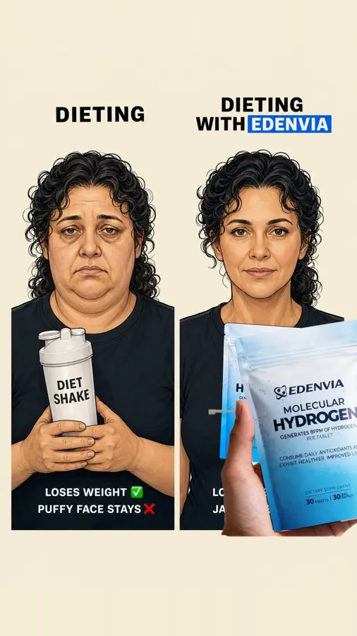
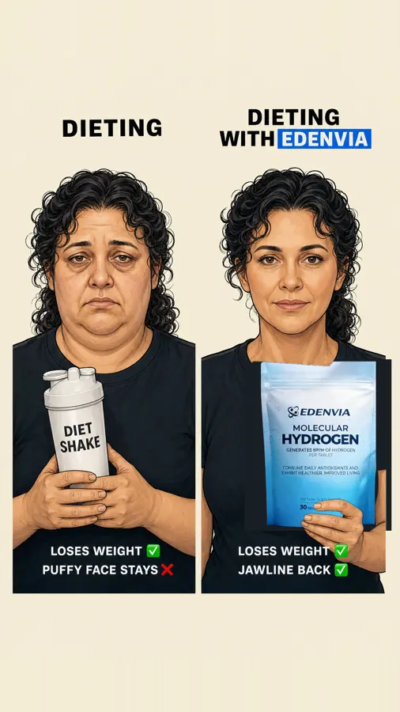
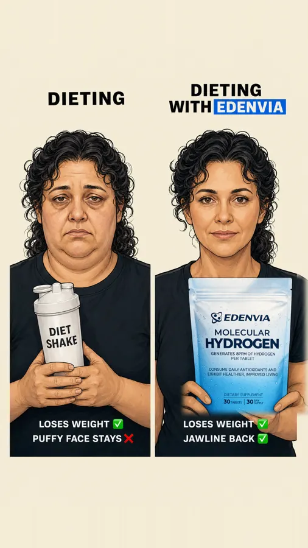
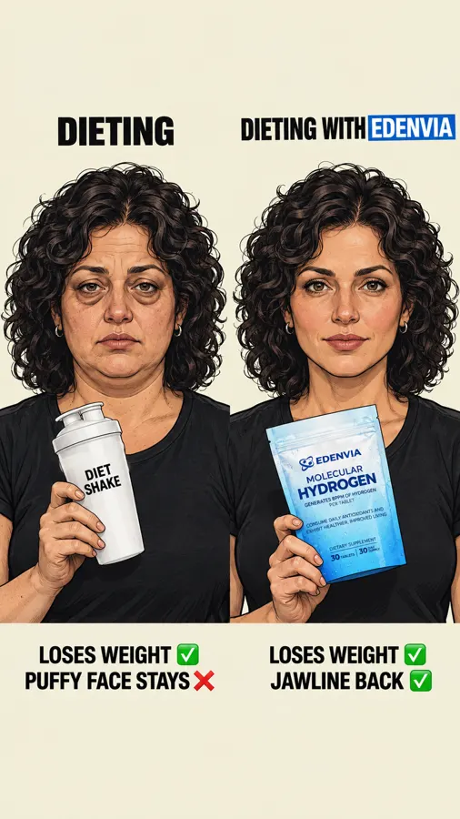
Why it worksQC round 1: the side crop clipped 'PUFFY FACE STAYS'; the pouch label lost the Edenvia wordmark and atom icon (C6). The same man drawn twice — hollow-eyed on the left holding his prescription, healthy on the right holding the brand — under 'FINASTERIDE | FINASTERIDE WITH MARS MEN': you keep your thing, we fix its side effect; the mirror: same face, two futures. Visual trick to copy literally: identical character, left degraded, right restored, each holding its product at the chest with the label out.
Template DNAman ~30 with hair-loss pills → a woman of 45–50 with a diet shake (the thing she keeps doing); dark circles / sunken → puffy face, soft double chin; healthy man with the Mars Men bottle → the same woman, jawline back, holding the Edenvia pouch; 'FINASTERIDE' → 'DIETING'; orange box → Edenvia blue box; hair lines → weight / puffy face / jawline lines.
Scene & placementno scene; two half-length portraits on cream. Ours: the same woman twice, face and jawline visible because this is the face angle
left: a plain 'DIET SHAKE' shaker bottle at the chest; right: the Edenvia pouch from Image 1 held at the chest with the fingers wrapped around it, label out, ~30 % width each — like the template
left: a plain 'DIET SHAKE' shaker bottle at the chest; right: the Edenvia pouch from Image 1 held at the chest with the fingers wrapped around it, label out, ~30 % width each — like the template
TextHeader_left: "DIETING"
Header_right: "DIETING WITH EDENVIA"
Left_1: "LOSES WEIGHT ✅"
Left_2: "PUFFY FACE STAYS ❌"
Right_1: "LOSES WEIGHT ✅"
Right_2: "JAWLINE BACK ✅"
Header_right: "DIETING WITH EDENVIA"
Left_1: "LOSES WEIGHT ✅"
Left_2: "PUFFY FACE STAYS ❌"
Right_1: "LOSES WEIGHT ✅"
Right_2: "JAWLINE BACK ✅"
Pixel inventory (KEEP / SWAP)
- SWAP person_left: man ~30, curly hair, dark circles, sunken, black T-shirt, holding a Finasteride bottle at the chest → woman 45–50, shoulder-length dark curly hair, puffy face, soft double chin, tired eyes, black T-shirt, holding a 'DIET SHAKE' bottle at the chest, label out (avatar + body part = the face (A11, C1); rival object = what she keeps doing)
- SWAP person_right: same man, healthy, holding Mars Men bottle → the same woman, jawline sharp, eyes rested, same hair and T-shirt, holding the Edenvia pouch at the chest, label out (before/after; gesture kept (A8))
- SWAP header_left: 'FINASTERIDE' → 'DIETING' (the thing she keeps)
- SWAP header_right: 'FINASTERIDE WITH' + 'MARS MEN' on orange box → 'DIETING WITH' + 'EDENVIA' on Edenvia accent blue box (copy formula X WITH BRAND; brand slot)
- SWAP left_lines: 'TREATS HAIRLOSS ✅' / 'KILLS TESTOSTERONE ❌' → 'LOSES WEIGHT ✅' / 'PUFFY FACE STAYS ❌' (formula: the thing works ✅, its side effect ❌)
- SWAP right_lines: 'KEEPS HAIR ✅' / 'NATURAL TESTOSTERONE ✅' → 'LOSES WEIGHT ✅' / 'JAWLINE BACK ✅' (both ✅; bank: 'My jawline FINALLY back')
- SWAP product_spot: left: rival bottle at chest, ~30 % width; right: brand bottle at chest, same size → left a plain DIET SHAKE shaker, right the EDENVIA pouch, real proportions (placement + gesture (A8, C11))
- KEEP background: flat cream (render style)
- KEEP logo: none beyond the product (no logo slot)
Backend prompt
IMAGE 1 = product reference: the EDENVIA Molecular Hydrogen tablet pouch. Reproduce it exactly as in Image 1: a stand-up resealable pouch with a zip seal, white at the top fading to sky blue at the bottom, covered in fine water droplets; at the top the Edenvia atom icon next to the bold italic wordmark Edenvia in dark navy; below it MOLECULAR in navy capitals, then HYDROGEN in very large bold navy capitals; then GENERATES 8PPM OF HYDROGEN PER TABLET; then two lines CONSUME DAILY ANTIOXIDANTS AND / EXHIBIT HEALTHIER, IMPROVED LIVING; near the bottom DIETARY SUPPLEMENT over a thin rule, then 30 TABLETS | 30 DAY SUPPLY. Real proportions, real 3D object with contact shadow and the scene's light. IMAGE 2 = the template ad to clone 1:1: same layout, composition, render style, palette, typography treatment, spacing and the SAME AMOUNT OF TEXT. PIXEL INVENTORY (KEEP / SWAP — follow exactly): - SWAP person_left: man ~30, curly hair, dark circles, sunken, black T-shirt, holding a Finasteride bottle at the chest → woman 45–50, shoulder-length dark curly hair, puffy face, soft double chin, tired eyes, black T-shirt, holding a 'DIET SHAKE' bottle at the chest, label out (avatar + body part = the face (A11, C1); rival object = what she keeps doing) - SWAP person_right: same man, healthy, holding Mars Men bottle → the same woman, jawline sharp, eyes rested, same hair and T-shirt, holding the Edenvia pouch at the chest, label out (before/after; gesture kept (A8)) - SWAP header_left: 'FINASTERIDE' → 'DIETING' (the thing she keeps) - SWAP header_right: 'FINASTERIDE WITH' + 'MARS MEN' on orange box → 'DIETING WITH' + 'EDENVIA' on Edenvia accent blue box (copy formula X WITH BRAND; brand slot) - SWAP left_lines: 'TREATS HAIRLOSS ✅' / 'KILLS TESTOSTERONE ❌' → 'LOSES WEIGHT ✅' / 'PUFFY FACE STAYS ❌' (formula: the thing works ✅, its side effect ❌) - SWAP right_lines: 'KEEPS HAIR ✅' / 'NATURAL TESTOSTERONE ✅' → 'LOSES WEIGHT ✅' / 'JAWLINE BACK ✅' (both ✅; bank: 'My jawline FINALLY back') - SWAP product_spot: left: rival bottle at chest, ~30 % width; right: brand bottle at chest, same size → left a plain DIET SHAKE shaker, right the EDENVIA pouch, real proportions (placement + gesture (A8, C11)) - KEEP background: flat cream (render style) - KEEP logo: none beyond the product (no logo slot) TEMPLATE DNA: man ~30 with hair-loss pills → a woman of 45–50 with a diet shake (the thing she keeps doing); dark circles / sunken → puffy face, soft double chin; healthy man with the Mars Men bottle → the same woman, jawline back, holding the Edenvia pouch; 'FINASTERIDE' → 'DIETING'; orange box → Edenvia blue box; hair lines → weight / puffy face / jawline lines. SCENE LOGIC: no scene; two half-length portraits on cream. Ours: the same woman twice, face and jawline visible because this is the face angle PRODUCT PLACEMENT (copy the template): left: a plain 'DIET SHAKE' shaker bottle at the chest; right: the Edenvia pouch from Image 1 held at the chest with the fingers wrapped around it, label out, ~30 % width each — like the template CHANGES (visual): Comic ink illustration with subtle shading, NOT photoreal, flat cream (#f1e9dc) background, exactly the template's layout: two half-length portraits side by side, a black bold condensed caps header above each, the right header's brand name highlighted in white on an Edenvia blue (#1468DB) box, two small caps lines with ✅ / ❌ under each portrait. The same woman twice, a woman in her late 40s with a soft, puffy face, a softened jawline and the beginning of a double chin, shoulder-length hair tied back, no make-up look, seen in a bathroom-mirror or phone-selfie framing — never a young model, never a sharp-jawed face. Do NOT copy the template's person.: LEFT she looks tired, puffy face, soft double chin, dark circles, holding a plain white shaker bottle labelled DIET SHAKE at her chest with both hands, label out; RIGHT the same face de-puffed, the jawline sharp, eyes rested, same hair and black T-shirt, holding the Edenvia Molecular Hydrogen stand-up pouch exactly as in Image 1 (white fading to sky blue, water droplets, zip seal) — a pouch of 30 effervescent tablets; never a bottle, jar, tub or blister at her chest with her fingers wrapped around it, label out, real proportions. Do NOT draw: no man, no prescription bottle, no hair-loss reading, no young model face on the right — the same 45-year-old woman, only de-puffed; no glass; do NOT copy the template's person. Product truth: one effervescent tablet dropped in a glass of clear water, never hot water. The pouch she holds is an EXACT replica of Image 1, label complete and readable: at the top the small atom icon next to the bold italic word Edenvia in dark navy, then MOLECULAR, then the large HYDROGEN, then GENERATES 8PPM OF HYDROGEN PER TABLET, the two CONSUME DAILY lines, DIETARY SUPPLEMENT and 30 TABLETS | 30 DAY SUPPLY — nothing missing, nothing re-lettered. PILLARBOX (mandatory): the canvas is 2:3 but the finished ad is a 9:16 Story. Keep the LEFT 10% and the RIGHT 10% of the canvas as plain background of the half they belong to (black / blue, or cream) with NOTHING in them. Every text line is short, centred in its half, and ends well before the edge: all text and both characters fit entirely inside the central 80% of the canvas width. TEXT (exactly, nothing else): - Header_left: "DIETING" - Header_right: "DIETING WITH EDENVIA" - Left_1: "LOSES WEIGHT ✅" - Left_2: "PUFFY FACE STAYS ❌" - Right_1: "LOSES WEIGHT ✅" - Right_2: "JAWLINE BACK ✅" USE CASE + CONSTRAINTS: Meta ad in the TEMPLATE'S OWN FORMAT (D15: a square stays 1:1, 4:5 stays 4:5, a 9:16 Story stays 9:16), agency-grade; keep the template's spacing between text blocks. Render ONLY the listed text, spelled exactly, once — nothing added. Nothing from the template's product world may remain (product, brand, logo, flavor, packaging). Anatomically correct, adults over 25. CRITICAL: the EDENVIA pouch, when present, is an exact replica of Image 1. Leave every brand-logo spot outside the label EMPTY (plain background, no icon, no letters) — the official logo is pasted there by script afterwards.